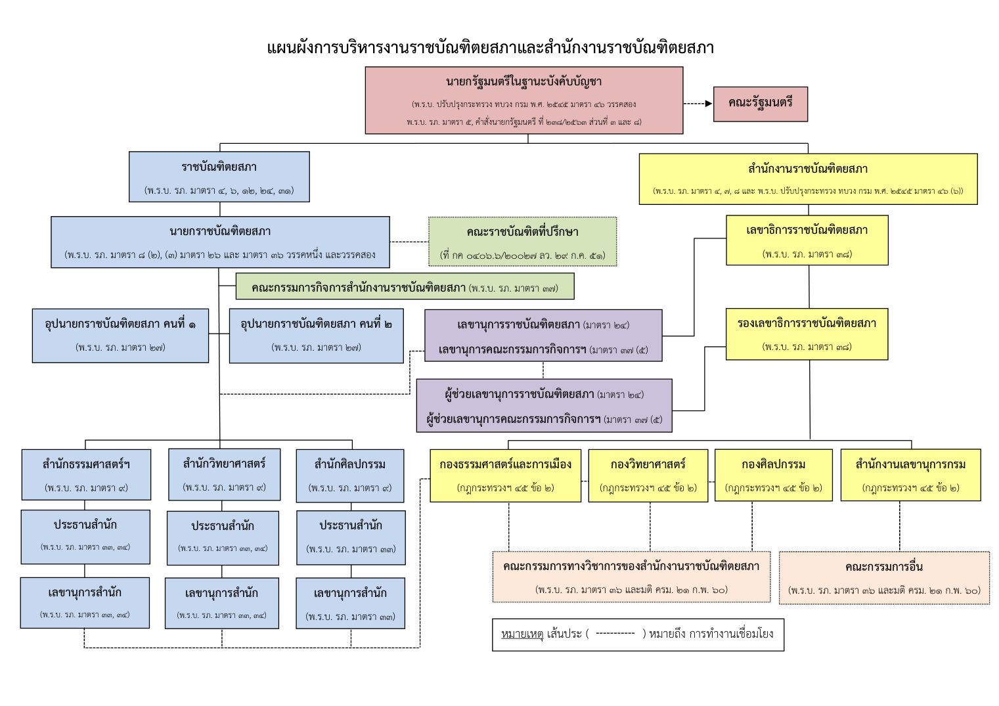

โครงสร้างหน่วยงานและการแบ่งส่วนราชการ
แผนภูมิและการแบ่งส่วนราชการของสำนักงานราชบัณฑิตยสภา
โครงสร้างหน่วยงาน
แผนผังการบริหารงาน
ราชบัณฑิตยสภาและสำนักงานราชบัณฑิตยสภา
นายกรัฐมนตรีในฐานะบังคับบัญชา
พ.ร.บ. ปรับปรุงกระทรวง ทบวง กรม พ.ศ. 2545 มาตรา 46 วรรคสอง · พ.ร.บ. รภ. มาตรา 5, คำสั่งนายกรัฐมนตรี ที่ 238/2563 ส่วนที่ 3 และ 8
คณะรัฐมนตรี
ราชบัณฑิตยสภา
พ.ร.บ. รภ. มาตรา 4, 6, 12, 24, 31
-
นายกราชบัณฑิตยสภา
พ.ร.บ. รภ. มาตรา 8 (2), (3) มาตรา 26 และมาตรา 36 วรรคหนึ่ง และวรรคสอง
- คณะราชบัณฑิตที่ปรึกษาที่ กค 0406.6/20027 ลว. 29 ก.ค. 51
- คณะกรรมการกิจการสำนักงานราชบัณฑิตยสภาพ.ร.บ. รภ. มาตรา 37
-
อุปนายกราชบัณฑิตยสภา
คนที่ 1คนที่ 2
พ.ร.บ. รภ. มาตรา 27
ราชบัณฑิต 3 สำนัก
-
สำนักธรรมศาสตร์และการเมือง
พ.ร.บ. รภ. มาตรา 9
ประธานสำนักเลขานุการสำนัก
-
สำนักวิทยาศาสตร์
พ.ร.บ. รภ. มาตรา 9
ประธานสำนักเลขานุการสำนัก
-
สำนักศิลปกรรม
พ.ร.บ. รภ. มาตรา 9
ประธานสำนักเลขานุการสำนัก
สำนักงานราชบัณฑิตยสภา
พ.ร.บ. รภ. มาตรา 4, 7, 8 และ พ.ร.บ. ปรับปรุงกระทรวง ทบวง กรม พ.ศ. 2545 มาตรา 46 (6)
-
เลขาธิการราชบัณฑิตยสภา
พ.ร.บ. รภ. มาตรา 38
ทำหน้าที่- เลขานุการราชบัณฑิตยสภา (มาตรา 24)
- เลขานุการคณะกรรมการกิจการฯ (มาตรา 37 (5))
-
รองเลขาธิการราชบัณฑิตยสภา
พ.ร.บ. รภ. มาตรา 38
ทำหน้าที่- ผู้ช่วยเลขานุการราชบัณฑิตยสภา (มาตรา 24)
- ผู้ช่วยเลขานุการคณะกรรมการกิจการฯ (มาตรา 37 (5))
หน่วยงานภายใน
- กองธรรมศาสตร์และการเมือง กฎกระทรวงฯ 45 ข้อ 2
- กองวิทยาศาสตร์ กฎกระทรวงฯ 45 ข้อ 2
- กองศิลปกรรม กฎกระทรวงฯ 45 ข้อ 2
- สำนักงานเลขานุการกรม กฎกระทรวงฯ 45 ข้อ 2
คณะกรรมการ
- คณะกรรมการทางวิชาการของสำนักงานราชบัณฑิตยสภาพ.ร.บ. รภ. มาตรา 36 และมติ ครม. 21 ก.พ. 60
- คณะกรรมการอื่นพ.ร.บ. รภ. มาตรา 36 และมติ ครม. 21 ก.พ. 60
กรอบเส้นประ หมายถึง การทำงานเชื่อมโยง

เอกสาร
แผนภูมิการแบ่งส่วนราชการ พุทธศักราช 2564
แผนผังการบริหารงานราชบัณฑิตยสภาและสำนักงานราชบัณฑิตยสภา ฉบับที่สำนักงานเผยแพร่